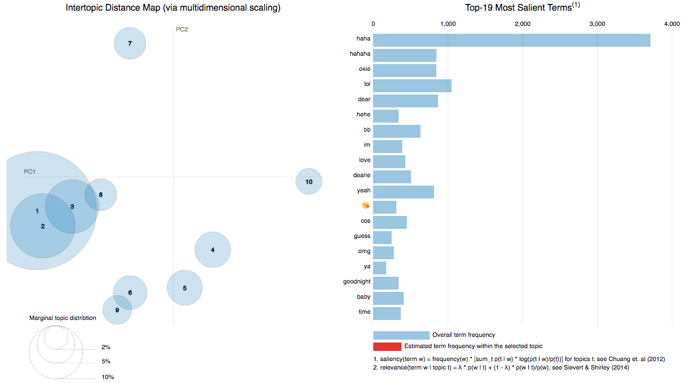

Having taken Professor Lafferty's course on "Nonparametric Inference", I wanted to explore the research he's most commonly associated with, and hence, dabbled with topic modelling, specifically the Latent Dirichlet Allocation model, for my Valentine's Day present to Alan :) I didn't have much time so I relied mostly on the LDAVis package in R and used our Whatsapp text messages from the past year. I didn't have to do much pre-processing of the text, because I know our texting styles - we don't abbreviate very often, and are very boring people who type the same way most of the time. This resulted in a rather clean data set, and I chose to include emojis and not to stem certain words like "hahaha" (because "hahaha" is different from "haha", as we all know), which I felt were terms in their own right. After which, I put everything in a Shiny app to capture our top conversation topics. What I particularly liked about this package was the multidimensional scaling feature - which revealed how similar the topics were, based on their word/term distributions, on a two-dimensional plane. To avoid revealing the contents of our conversations, I decided to just take a screenshot of the app - illustrating the first topic (thankfully) being largely positive! The first three topics are also rather similar to each other - yay.
